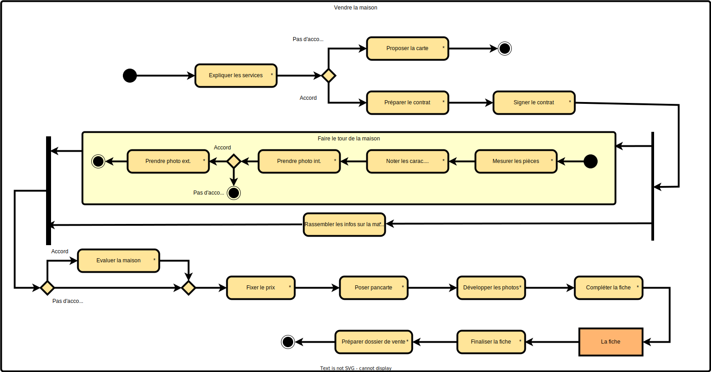

2A BUT - IUT d'Orsay Qualité de développement - 2023/2024
Travaux dirigés - TD
Diagramme UML d'activités
Exercice : Entrevue Analyste et Agent Immobilier
Analyste : Bonjour ! Pourriez-vous m’éclairer sur le travail d’agent immobilier ?
Si on commençait par l’arrivée d’un client dans le bureau de la compagnie. Que se passe t-il lorsqu’il franchit la porte ?
Agent immobilier : Si c’est un nouveau client, la secrétaire la dirige vers l’agent de garde qui l’accueille et répond à ses questions.
Si ce n’est pas un nouveau client, la secrétaire la dirige vers son agent habituel.
Analyste : Est-ce que le client est habituellement seul ?
Agent immobilier : Non, les clients viennent souvent en couple mais un des deux sera notre contact principal.
Analyste : Quelles sont les questions typiques que pose un client qui veut vendre sa maison ?
Agent immobilier :
- Quels sont les services offerts par un agent immobilier? Combien ça coûte?
- Pouvez-vous vendre notre maison ?
Analyste : Commençons par les premières questions. Quels sont les services offerts par un agent immobilier ? Combien ça coûte ?
Agent immobilier : Les services offerts inclus :
- Les conseils pour la mise en valeur de votre maison
- Une évaluation de la valeur marchande de votre maison
- L’inscription de la maison dans notre catalogue
- La publicité (journaux, pancartes, télévision, internet)
- Les visites de la maison (par les acheteurs)
- La négociation des promesses d’achat
- L’agent inscripteur répond aux questions des acheteurs.
Les frais sont un pourcentage du prix de vente, payable au moment de la signature du contrat de vente. Ces frais, appelés commissions, sont par la suite partagés entre l’agent inscripteur, son agence, l’agent de l’acheteur et son agence selon les pratiques d’affaires des agences.
Analyste: Très bien. Maintenant, que répondez-vous à la question "Pouvez- vous vendre notre maison ?"
Agent immobilier :
- Je leur explique les services inclus dans le contrat de service.
- S’ils ne sont pas d’accord avec les services proposés, je leur laisse ma carte d’affaires et nous nous disons au revoir.
- S’ils sont d’accord avec les services proposés, je prépare un contrat de service sur un formulaire. Le client vendeur signe. Je signe à mon tour le contrat de service. Je deviens ainsi leur agent inscripteur.
- Pendant la durée du contrat, le client vendeur ne peut pas vendre sa maison lui-même, ni faire affaire avec un autre agent inscripteur.
- Ensuite, je fais le tour de la maison.
- Je mesure chacune des pièces de la maison.
- Je note les éléments caractéristiques des cuisines, des salles de bain, des salons, etc.
- Je prends des photos couleur de la maison extérieure à l’avant et à l’arrière.
- Lorsque le client le permet, je prends aussi des photos intérieures des diverses pièces. C’est très pratique pour les maisons qui sont très éloignées du centre-ville. Ça évite des déplacements inutiles. C’est aussi un outil de vente indéniable pour des maisons de qualité exceptionnelle.
- Pendant que je fais le tour de la maison (photo et mesure), le client ras- semble les renseignements qu’il a en sa possession.
- Factures annuelles d’énergie, eau
- Factures annuelles de taxes municipales et scolaires
- Relevé de l’évaluation municipale
- Copie du certificat de localisation (pour obtenir les dimensions du terrain)
- S’il y a lieu, renseignements sur la créance hypothécaire (taux, solde, versement, échéance)
- Si le client vendeur le souhaite, je fais une évaluation de la valeur marchande de la maison en me basant sur les qualités de la maison et sur la valeur marchande des maisons du quartier qui se sont vendues récemment.
- Nous nous entendons sur un prix demandé.
- Avant de quitter la maison, je pose une belle pancarte devant la maison.
- Avant de rentrer au bureau, je fais développer les photos dans un centre photo.
- Je complète une fiche pour la maison. Cette fiche contient tous les renseignements recueillis sur la maison.
- La secrétaire dactylographie la fiche. Elle reprographie la fiche et la dépose dans les catalogues.
- Elle prépare un dossier pour cette maison. Le dossier contiendra la fiche, les photos, les clés de la maison, une copie du contrat de service. Éventuellement, le dossier contiendra les promesses d’achat (et leur contre- proposition). Elle classe ce nouveau dossier dans le classeur « à vendre ».
Analyste : Qui s’occupe de la publicité ?
...
Analyste : merci de votre collaboration.
Travail demandé
A partir de l’entrevue dont nous vous transmettons un extrait ci-dessous,
formaliser les processus de travail avec le formalisme du diagramme d’activités pour inscrire une maison à
vendre en commençant par Je leur explique les services inclus dans le contrat de service et en
terminant par Elle classe ce nouveau dossier dans le classeur "à vendre".

2A BUT - IUT d'Orsay Qualité de développement - 2023/2024